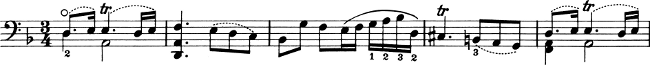
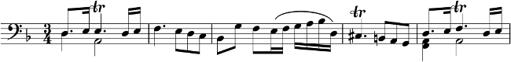
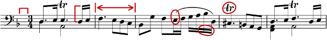
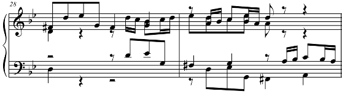
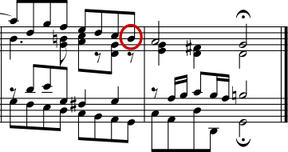

| [ << Music engraving ] | [Top][Contents][Index][ ? ] | [ Literature list >> ] | ||
| [ < Why work so hard? ] | [ Up : Music engraving ] | [ Beauty contests > ] | ||
1.3 Automated engraving
Here we describe what is required to create software that can mimic the layout of engraved scores: a method of describing good layouts to the computer and a lot of detailed comparisons with real engravings.
| Beauty contests | ||
| Improvement by benchmarking | ||
| Getting things right |
| [ << Music engraving ] | [Top][Contents][Index][ ? ] | [ Literature list >> ] | ||
| [ < Automated engraving ] | [ Up : Automated engraving ] | [ Improvement by benchmarking > ] | ||
Beauty contests
How do we actually make formatting decisions? In other words, which of the three configurations should we choose for the following slur?
There are a few books on the art of music engraving available. Unfortunately, they contain simple rules of thumb and some examples. Such rules can be instructive, but they are a far cry from an algorithm that we could readily implement in a computer. Following the instructions from literature leads to algorithms with lots of hand-coded exceptions. Doing all this case analysis is a lot of work, and often not all cases are covered completely:

(Image source: Ted Ross, The Art of Music Engraving)
Rather than trying to write detailed layout rules for every possible scenario, we only have to describe the objectives well enough that LilyPond can judge the attractiveness of several alternatives. Then, for each possible configuration we compute an ugliness score and we choose the least ugly configuration.
For example, here are three possible slur configurations, and LilyPond has given each one a score in ‘ugly points’. The first example gets 15.39 points for grazing one of the noteheads:
The second one is nicer, but the slur doesn’t start or end on the note heads. It gets 1.71 points for the left side and 9.37 points for the right side, plus another 2 points because the slur ascends while the melody descends for a total of 13.08 ugly points:
The final slur gets 10.04 points for the gap on the right and 2 points for the upward slope, but it is the most attractive of the three configurations, so LilyPond selects this one:
This technique is quite general, and is used to make optimal decisions for beam configurations, ties and dots in chords, line breaks, and page breaks. The results of these decisions can be judged by comparison to real engravings.
| [ << Music engraving ] | [Top][Contents][Index][ ? ] | [ Literature list >> ] | ||
| [ < Beauty contests ] | [ Up : Automated engraving ] | [ Getting things right > ] | ||
Improvement by benchmarking
LilyPond’s output has improved gradually over time, and it continues to improve by comparing its output to hand-engraved scores.
For example, here is one line of a benchmark piece from a hand-engraved edition (Bärenreiter BA320):
and the same quotation as engraved by a very old version of LilyPond (version 1.4, May 2001):
The LilyPond 1.4 output is certainly readable, but close comparison with the hand-engraved score showed a lot of errors in the formatting details:
- there is too much space before the time signature
- the stems of the beamed notes are too long
- the second and fourth measures are too narrow
- the slur is awkward-looking
- the trill marks are too big
- the stems are too thin
(There were also two missing note heads, several missing editorial annotations, and an incorrect pitch!)
By adjusting the layout rules and font design, the output has improved considerably. Compare the same reference score and the output from the current version of LilyPond (2.16.2):
The current output is not a clone of the reference edition, but it is much closer to publication quality that the earlier output.
| [ << Music engraving ] | [Top][Contents][Index][ ? ] | [ Literature list >> ] | ||
| [ < Improvement by benchmarking ] | [ Up : Automated engraving ] | [ Building software > ] | ||
Getting things right
We can also measure LilyPond’s ability to make music engraving decisions automatically by comparing LilyPond’s output to the output of a commercial software product. In this case we have chosen Finale 2008, which is one of the most popular commercial score writers, particularly in North America. Sibelius is its major rival and appears to be especially strong in the European market.
For our comparison we selected Bach’s Fugue in G minor from the Well-Tempered Clavier, Book I, BWV 861, whose opening subject is
We made our comparison by engraving the last seven measures of the piece (28–34) in Finale and LilyPond. This is the point in the piece where the subject returns in a three-part stretto and leads into the closing section. In the Finale version, we have resisted the temptation to make any adjustments to the default output because we are trying to show the things that each software package gets right without assistance. The only major edits that we made were adjusting the page size to match this essay and forcing the music onto two systems to make the comparison easier. By default Finale would have engraved two systems of three measures each and a final, full-width system containing a single measure.
Many of the differences between the two engravings are visible in measures 28–29, as shown here with Finale first and LilyPond second:
Some shortcomings in the unedited Finale output include:
- Most of the beams extend too far off the staff. A beam that points towards the center of the staff should have a length of about one octave, but engravers shorten this when the beam points away from the staff in multi-voice music. The Finale beaming can easily be improved with their Patterson Beams plug-in, but we elected to skip that step for this example.
- Finale doesn’t adjust the positions of interlocking note heads, which makes the music extremely difficult to read when the upper and lower voices exchange positions temporarily:
- Finale has placed all of the rests at fixed heights on the staff. The user is free to adjust them as needed, but the software makes no attempt to consider the content of the other voice. As luck would have it, there are no true collisions between notes and rests in this example, but that has more to do with the positions of the notes than the rest. In other words, Bach deserves more credit for avoiding a complete collision than Finale does.
This example is not intended to suggest that Finale cannot be used to produce publication-quality output. On the contrary, in the hands of a skilled user it can and does, but it requires skill and time. One of the fundamental differences between LilyPond and commercial scorewriters is that LilyPond hopes to reduce the amount of human intervention to an absolute minimum, while other packages try to provide an attractive interface in which to make these types of edits.
One particularly glaring omission we found from Finale is a missing flat in measure 33:

The flat symbol is required to cancel out the natural in the same measure, but Finale misses it because it occurred in a different voice. So in addition to running a beaming plug-in and checking the spacing on the noteheads and rests, the user must also check each measure for cross-voice accidentals to avoid interrupting a rehearsal over an engraving error.
If you are interested in examining these examples in more detail, the full seven-measure excerpt can be found at the end of this essay along with four different published engravings. Close examination reveals that there is some acceptable variation among the hand-engravings, but that LilyPond compares reasonably well to that acceptable range. There are still some shortcomings in the LilyPond output, for example, it appears a bit too aggressive in shortening some of the stems, so there is room for further development and fine-tuning.
Of course, typography relies on human judgment of appearance, so people cannot be replaced completely. However, much of the dull work can be automated. If LilyPond solves most of the common situations correctly, this will be a huge improvement over existing software. Over the course of years, the software can be refined to do more and more things automatically, so manual overrides are less and less necessary. Where manual adjustments are needed, LilyPond’s structure has been designed with that flexibility in mind.
| [ << Music engraving ] | [Top][Contents][Index][ ? ] | [ Literature list >> ] | ||
| [ < Improvement by benchmarking ] | [ Up : Automated engraving ] | [ Building software > ] | ||
Other languages: deutsch, español, français.
About automatic language selection.